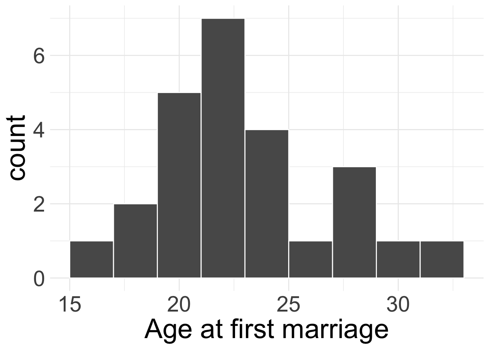
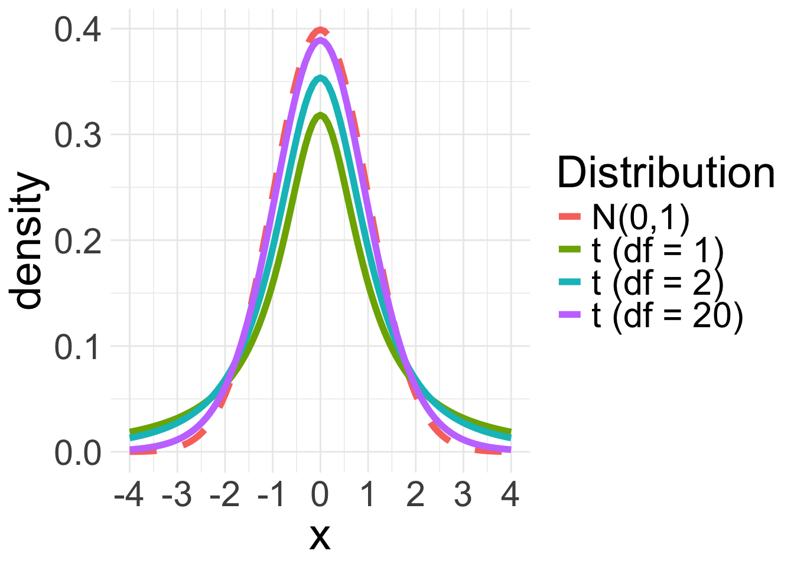
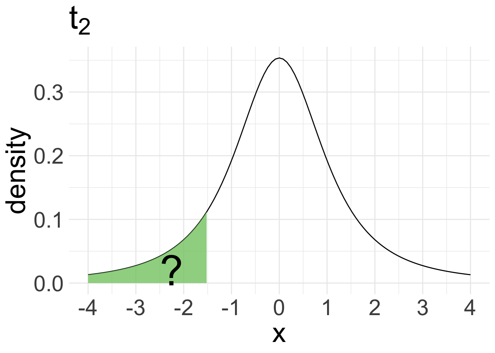
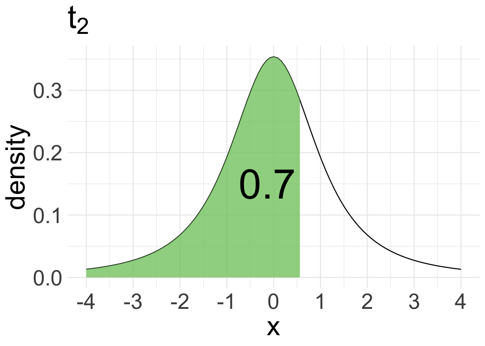
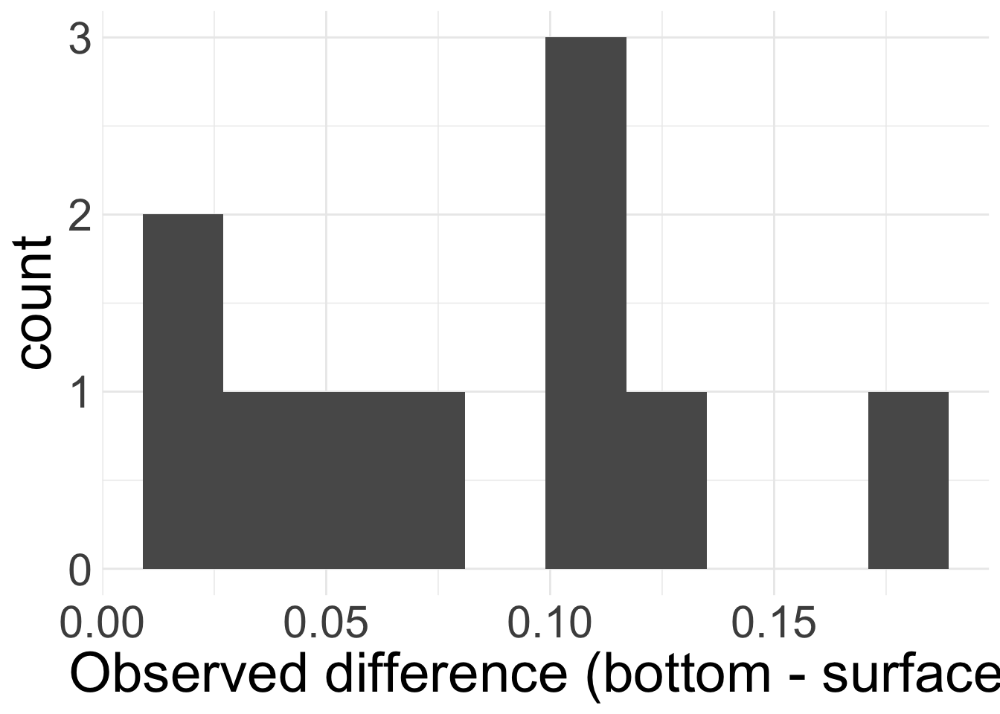

Confidence Intervals for a Mean
Housekeeping
Recap
Central Limit Theorem: if we have a sufficiently large sample of \(n\) independent observations from a population with mean \(\mu\) and standard deviation \(\sigma\), then \(\bar{X} \overset{\cdot}{\sim} N\left(\mu, \frac{\sigma}{\sqrt{n}}\right)\)
When considering the special case of sample proportions, if success-failure condition is met, we have \(\hat{p} \overset{\cdot}{\sim} N\left(p, \sqrt{\frac{p(1-p)}{n}}\right)\)
To obtain a \(\gamma\times 100\%\) CI for a mean, we use
\[ \text{point estimate} \pm \text{critical value} \times \text{SE} \]
- We needed to replace the standard error with an estimate
Checking normality
Remember, CLT requires a sufficiently large sample size \(n\) or assumption of Normality of the underlying data.
No perfect way to check Normality, but rule of thumb:
If \(n < 30\) small: check that there are no clear outliers
If \(n \geq 30\) large: check that there are no particularly extreme outliers
CI for a single mean (known variance)
Suppose we want a \(\gamma\times 100\%\) CI for population mean \(\mu\).
What would your “best guess” point estimate for \(\mu\) be?
If CLT holds, then we know
\[ \bar{X} \overset{\cdot}{\sim} N\left(\mu, \frac{\sigma}{\sqrt{n}}\right) \]
So our \(\gamma \times 100\%\) CI for \(\mu\) is:
\[ \text{point estimate} \pm \underbrace{\text{critical value} \times \text{SE}}_{\text{Margin of Error}} = \bar{x} \pm z_{(1+\gamma)/2}^* \times \frac{\sigma}{\sqrt{n}} \]
Example: age at marriage
In 2006-2010, the CDC conducted a thorough survey asking US women their age at first marriage. The standard deviation of the responses is 4.72 years. Suppose we randomly sample 25 US women and ask them their age at first marriage (plotted below). Their average age at marriage was 23.32.

What is/are the population parameter(s)? What is the statistic?
We will obtain an 80% confidence interval for the mean age of US women at first marriage.
Are conditions of CLT met?
If so, what does CLT tell us? Write this down in statistical notation!
Example: age at marriage (cont.)
Obtain an 80% confidence interval for the mean age of US women at first marriage.
By CLT: \[\bar{X} \overset{\cdot}{\sim}N\left(\mu, \frac{4.72}{\sqrt{25}}\right) = N(\mu, 0.944)\]
Collect necessary components:
- Point estimate: \(\bar{x} = 23.32\)
- Standard error: \(0.944\)
- Critical value: \(z_{0.9}^{*} =\)
qnorm(0.9, 0, 1)\(= 1.28\)
So our 80% confidence interval is \(23.32 \pm 1.28 \times 0.944 = (22.11, 24.53)\)
Interpret this interval!
Utility of this model
The previous formula for the confidence interval for \(\mu\) relies on knowing \(\sigma\)
But wait…
Want to construct a CI for \(\mu\) because we don’t know its value
If we don’t know \(\mu\), it seems highly unlikely that we would know \(\sigma\)!
So in practice, we will have to estimate standard error for \(\bar{X}\):
\[ \widehat{\text{SE}}(\bar{X}) = \frac{s}{\sqrt{n}} \]
where \(s\) is the observed sample standard deviation
- Similar to CI for \(p\), where we replaced \(p\) with \(\hat{p}\) in the standard error
Variance issue
Replacing \(s\) for \(\sigma\) works well enough when \(n\) is large so we can estimate \(\sigma\) accurately
However, estimating variance is very hard when \(n\) is small
So if \(n\) small and \(\sigma\) unknown, we cannot use the Normal approximation to model \(\bar{X}\) for inferential tasks
Instead, we will use a new distribution for inference calculations, called the \(t\)-distribution
\(t\)-distribution
The \(t\)-distribution is symmetric and bell-curved (like the Normal distribution)
Has “thicker tails” than the Normal distribution (the tails decay more slowly)

- \(t\)-distribution is always centered at 0
- One parameter: degrees of freedom (df) defines exact shape of the \(t\)
- Denoted \(t_{df}\) (e.g. \(t_{1}\) or \(t_{20}\))
- As \(df\) increase, \(t\) resembles the \(N(0,1)\). When \(df \geq 30\), the \(t_{df}\) is nearly identical to \(N(0,1)\)
Working with \(t\) distribution
Let’s draw pictures for the following:
What proportion of the \(t_{2}\)-distribution falls below -1.5?
What value of the \(t_{2}\)-distribution has \(70\%\) area lying below it?
\(t\) distribution in R
pnorm(x, mean, sd)andqnorm(%, mean, sd)used to find probabilities and percentiles for the Normal distributionAnalogous functions for \(t\)-distribution:
pt(x, df)andqt(%, df)

pt(-1.5,df =2) = 0.1361966

qt(0.7, df =2) = 0.6172134
CI for a single mean (unknown variance)
Still require independent observations and the Normality condition:
General formula for \(\gamma \times 100\%\) CI is same, but we simply change what goes into the margin of error.
\[ \text{point estimate} \pm t^*_{df, (1+\gamma)/2} \times \widehat{\text{SE}} = \bar{x} \pm t_{df, (1+\gamma)/2}^* \times \frac{s}{\sqrt{n}} \]
\(df = n-1\)
critical value \(t^*_{df, (1+\gamma)/2}\) = \((1+\gamma)/2\) percentile of the \(t_{df}\) distribution
Example: age at marriage (cont.)
Let’s return to the age at marriage example. Once again let’s obtain an 80% confidence interval for the average age of first marriage for US women, but now suppose we don’t know \(\sigma\).
In our sample of \(n = 25\) women, we observed a sample mean of \(23.32\) years and a sample standard deviation of \(s = 4.03\) years.
- Point estimate: \(\bar{x} = 23.32\)
- Standard error: \(\widehat{SE} = \frac{s}{\sqrt{n}}= \frac{4.03}{\sqrt{25}} = 0.806\)
- Critical value:
- \(df = n-1 = 24\)
- \(t_{24}^*\) =
qt(0.9, df =24)= 1.32
So our 80% confidence interval for \(\mu\) is:
\[ 23.32 \pm 1.32 \times 0.806 = (22.26, 24.38) \]
Comparing CIs
Known variance:
80% CI: (22.11, 24.53)
Unknown variance:
80% CI: (22.26, 24.38)
How do the two intervals compare?
- Interpretation of CI does not change even if we use a different model!
Examples
Assume that all conditions necessary for inference are satisfied.
qnorm(0.90) = 1.28
qnorm(0.95) = 1.64
qnorm(0.975) = 1.96
qt(0.90, df = 35) = 1.31
qt(0.95, df = 35) = 1.69
qt(0.975, df = 35) = 2.03
qt(0.90, df = 36) = 1.31
qt(0.95, df = 36) = 1.69
qt(0.975, df = 36) = 2.03
A 90% confidence interval for a population mean \(\mu\) is given as \((18.985, 21.015)\). The interval was obtained based on a SRS for 36 observations. Calculate the sample mean and sample standard deviation.
The standard deviation for students at particular Ivy League college is 250 points. Two students, Raina and Luke, want to estimate the average SAT score of students at this college. They want their margin of error to be no more than 25 points.
Raina wants to use a 90% confidence level. How large a sample does Raina need to collect?
Luke wants to use a 95% confidence level. Without calculations, determine whether Luke’s sample should be larger or smaller than Raina’s. Explain your reasoning.
Calculate the minimum sample size for Luke.
CIs for Paired data
Paired data
Suppose we have two sets of observations/data \(\boldsymbol{x} = (x_{1}, x_{2}, \ldots x_{n})\) and \(\boldsymbol{y} = (y_{1}, y_{2}, \ldots, y_{n})\)
The data are considered paired data if each \(x_{i}\) corresponds to exactly one \(y_{i}\)
Example: your score on the midterm and your score on the final
When analyzing paired data, we are typically interested in the difference in outcomes of each pair of observations
Paired differences
Let \(d_{i} = y_{i} - x_{i}\) for each \(i = 1,\ldots, n\) be the observed differences.
The \(d_{i}\) come from larger population with true mean difference \(\mu_{d}\) and standard deviation of differences \(\sigma_{d}\)
The sample mean difference and sample standard deviation of the differences are
\[\bar{d} = \frac{1}{n}\sum_{i=1}^{n} d_{i} \qquad \qquad s_{d} = \frac{1}{n-1}\sum_{i=1}^{n} (d_{i} - \bar{d})^2 \]
CLT for mean difference in pairs
Suppose the \(n\) observational units are independent and the distribution of the differences is approximately normal.
Then CLT says:
\[ \bar{d} \overset{\cdot}{\sim} N\left(\mu_{d}, \frac{\sigma_{d}}{\sqrt{n}} \right) \]
CI for mean difference in pairs
We are usually interested in performing inference for \(\mu_{d}\) when both \(\mu_{d}\) and \(\sigma_{d}\) unknown
Our formula for \(\gamma\times 100\%\) CI for \(\mu_{d}\) is analogous to the formula for one mean when \(\sigma\) unknown:
\[ \text{point estimate} \pm t^*_{df, (1+\gamma)/2} \times \widehat{\text{SE}} = \bar{d} \pm t_{df, (1+\gamma)/2}^* \times \frac{s_{d}}{\sqrt{n}} \]
where \(df = n-1\)
Example: zinc
Data consist of measured zinc concentrations in bottom water and surface water at 10 randomly sampled wells:
Do the data suggest that the true average concentration in the bottom water is different than that of surface water? Let’s answer this using a 95% confidence interval.

bottom surface
1 0.430 0.415
2 0.266 0.238
3 0.567 0.390
4 0.531 0.410
5 0.707 0.605
6 0.716 0.609Are the data paired? Does CLT apply?
Example: zinc (cont.)
zinc <- zinc |>
mutate(d = bottom - surface)
d_bar <- mean(zinc$d)
d_bar[1] 0.0804s_d <- sd(zinc$d)
s_d[1] 0.05227321Let’s collect our information:
point estimate: \(\bar{d} = 0.0804\)
SE \(\approx\) \(\frac{s_{d}}{\sqrt{n}} = \frac{0.052}{\sqrt{10}} = 0.016\)
critical value: \(df = n-1 = 9\)
- \(t_{9, 0.975}^{*} =\)
qt(0.975,9)\(= 2.26\)
- \(t_{9, 0.975}^{*} =\)
So our 95% confidence interval is:
\[0.0804 \pm 2.26(0.016) = (0.044, 0.117)\]
Do the data suggest that the true average concentration in the bottom water is different than that of surface water? Explain.
CIs for difference in two means
Difference of two means
Now consider two populations under the condition that the data/populations are not paired.
We might be interested in learning about whether or not the two means are equal (think about the voice jitter homework problem)!
Let \(\mu_{1}\) and \(\mu_{2}\) represent the population means for the two populations 1 and 2
We take samples of size \(n_{1}\) and \(n_{2}\) from each population, respectively
We might think it reasonable to use \(\bar{x}_{1} - \bar{x}_{2}\) as a point estimate for \(\mu_{1} - \mu_{2}\)
Conditions for inference
The conditions for the CLT and use of the \(t\)-distribution for inference will look slightly different now that we have two populations:
- Independence (extended): need data within and between the two groups. E.g. the two data sets come from independent random samples or from a randomized experiment.
- Normality: we need to check for approximate normality for both groups separately
Formula for CI for difference in two means
If the conditions hold, then our usual formula for \(\gamma \times 100\%\) CI of \(\text{point estimate} \pm \text{Margin of Error}\) still holds!
- point estimate: \(\bar{x}_{1} - \bar{x}_{2}\)
If \(\sigma_{1}\) and \(\sigma_{2}\) known:
\(\text{SE} = \sqrt{\frac{\sigma_{1}^2}{n_{1}} + \frac{\sigma_{2}^2}{n_{2}}}\)
critical value: \(z_{(1+\gamma)/2}^*\)
- i.e. \((1+\gamma)/2\) percentile of \(N(0,1)\)
If \(\sigma_{1}\) and \(\sigma_{2}\) unknown:
\(\widehat{\text{SE}} = \sqrt{\frac{s_{1}^2}{n_{1}} + \frac{s_{2}^2}{n_{2}}}\)
critical value: \(t_{df, (1+\gamma)/2}^*\)
i.e. \((1+\gamma)/2\) percentile of \(t_{df}\)
\(df = \min\{n_{1} -1, n_{2} - 1\}\)